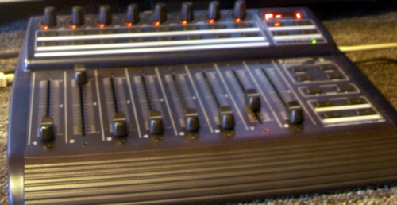

light9 in 2008
Drew Perttula
http://bigasterisk.com/
Existing system
From my June 2005 presentation:
(play cmds)
ascoltami --------------> mpd ----------> audio out
| (timing)
v
curvecalc subcomposer keyboardcomposer
| | |
+--- | ----+
\----- | --------/
\--+---/
| (light levels)
v
dmxserver
| (dmx levels)
......... v ....................
. entec open dmx .
. | (dmx) . external hardware
. v .
. dmx dimmer .
. | (juice) .
. v .
. light .
................................
External libraries
- Twisted - event loop and networking, xmlrpc
- tk, tix
- pympd - my twisted interface to mpd
- louie - signals
- mpd - music player daemon
- rdflib
- darcs
What's new: real sliders

- $200 board with 8 motorized faders (plus knobs, lights, and buttons)
- Talks midi or usb-midi
- Python/linux driver is easy:
self.dev = open("/dev/snd/midiC1D0")
b0, which, value = [ord(b) for b in self.dev.read(3)]
self.dev.write(chr(0xb0) + chr(which[0]) + chr(int(value)))
What's new: RDF for most data storage
- Old system: ad-hoc text files. Never do this.
- Now: most files are RDF data (saved as .n3 or ntriples)
complex data structures (objects with types and attributes, attrs, lists, sets, references between files)
use DSLs to abbreviate boring parts
What's new: lightsim
- We could really use a good way to preview scenes
- Lighting follows the superposition principle
- Original version from 2002: Tk, PIL
- Current version: qt, OpenGL
Related projects
vistrails
kamaelia
http://www.opendmx.net/index.php/Open_DMX_USB